드디어 여행의 끗~ 스페인 바르셀로나~
2박3일동안 맛난 해산물 먹으면서 쉬다오자!!
가 목표였던 지라 관광보다는 맛집찾아댕기기에 주력한 두사람^^;;
저녁타임 오픈하자마자 들어갔는데
금새 테이블이 다 차더라구요
관광객도 많고 이래저래 인기있는 곳인듯^^
맛은 고냥고냥 괜찮았어요
(먹을거에는 한없이 관대한 나;;;)
초콜릿 전문매장으로 가게 안쪽에 카페가 있습니다
추천메뉴인 쟈스민초코라떼랑
3가지 차가운 초코 음료 테이스팅, 쪼코4개 주문
쟈스민초코라떼는 묘~한 맛이 매력^^
쪼코음료에 쟈스민향도 나고 달달하더구만요//
과일이랑 과일주스가 여기저기 잔뜩 ㅜㅜ
흑흑 여기 넘 행복했음 ㅜㅜ
그리고 조각과일 두팩
둘다 넘 맛났다 ㅜㅜ
망고+코코넛의 달달한 맛이 넘 좋아 ㅜㅜ
요건 점심해결하러 아무곳이나 들어갔는데
잘못선택했음....OTL
빵스&컴퍼니
이라는 뜻이라네용
느즈막하게 해변가 가서 모래사장좀 걷고 물장구좀 치다가
저녁먹으로 거거
(후에 들은 이야기인데 오후1~2시쯤 해변가를 가면
토플리스 언니들이 그렇게 많다던데 ㅜㅜ
크흡 진작 알았음 그때가는건데OTL)
나중에 동생곰이 요리랑 같이 마시믄서
이 술이 해산물이랑 정말 잘 어울린다고 좋아했음
아빠님 선물한다고 면세점에서 한병 사 갔다
부...부럽다 ㅜㅜ 술이 맛나냐? 흑흑
난 알콜맛 밖에 모르겠던데 ㅜㅜ
밑에는 홍합 / 새우 / 생선구이 에 오징어까지
해산물이 잔뜩!! >_<
아 진짜 스페인에서 그동안 못먹은 해산물 실컷 먹고왔어요//
(영국은 당췌 생선요리가 변변치 않아서 ㅜㅜ)
처음 나왔을때는 헉;; 뭔 양이 이리많아
이걸 둘이 어떻게 다 먹어;; - 였는데
밑에깔린 홍합빼고는 깔끔하게 먹어치웠습니다^^
어느것 하나 빠지지 않고 다 맛있어요 ㅜㅜ
먼저 스페인 댕겨온 쎄진양이 스페인 먹을게 다 맛나서
거진 먹는데 돈 다쓰고왔다더니 그말이 사실이었어 ㅜㅜ
으으 ㅜㅜ 또 생각난다
대따 맛난 오징어랑 튼실(?)했던 생선구이ㅜㅜ
새우도 맛나고 홍합도 비린내가 하나도 없었어요//
사실 홍합 별로 안 좋아하는데 이건 왤케 맛있어 ㅜㅜ
사진보니까 또 가고싶......
2박3일동안 맛난 해산물 먹으면서 쉬다오자!!
가 목표였던 지라 관광보다는 맛집찾아댕기기에 주력한 두사람^^;;
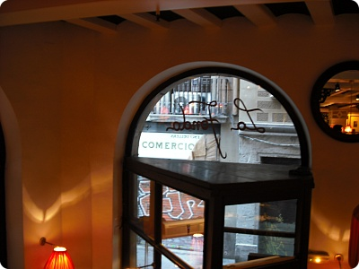
라 폰다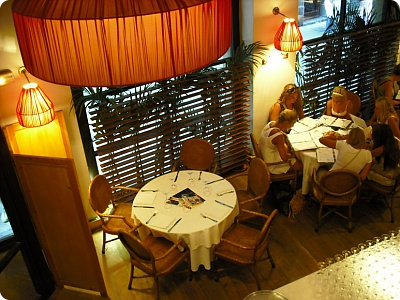
첫날 도착해서 숙소에 짐풀고 거리좀 헤매다가저녁타임 오픈하자마자 들어갔는데
금새 테이블이 다 차더라구요
관광객도 많고 이래저래 인기있는 곳인듯^^
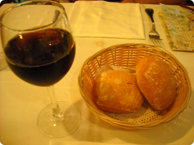
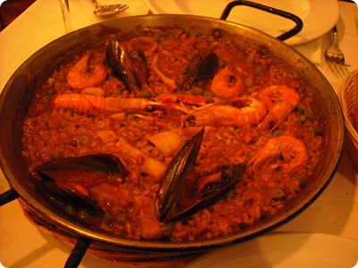
요거이 빠에야맛은 고냥고냥 괜찮았어요
(먹을거에는 한없이 관대한 나;;;)
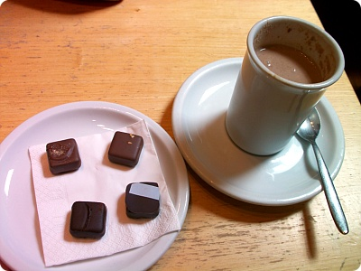
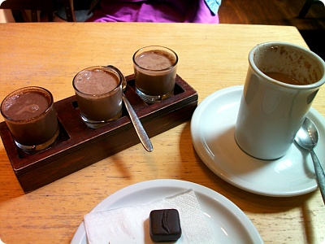
여기능 카카오 쌈빠까(CACAO SAMPAKA)초콜릿 전문매장으로 가게 안쪽에 카페가 있습니다
추천메뉴인 쟈스민초코라떼랑
3가지 차가운 초코 음료 테이스팅, 쪼코4개 주문
쟈스민초코라떼는 묘~한 맛이 매력^^
쪼코음료에 쟈스민향도 나고 달달하더구만요//
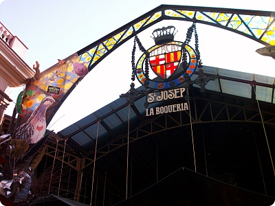
람블라스 거리에 있는 마켓!!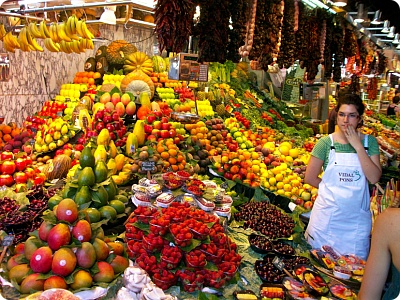
오우 ㅜㅜ 누가 나 여기 취직시켜줘!!!!과일이랑 과일주스가 여기저기 잔뜩 ㅜㅜ
흑흑 여기 넘 행복했음 ㅜㅜ
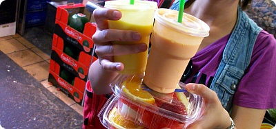
망고+코코넛 쥬스랑 / 동생곰은 뭘 주문한거지???그리고 조각과일 두팩
둘다 넘 맛났다 ㅜㅜ
망고+코코넛의 달달한 맛이 넘 좋아 ㅜㅜ
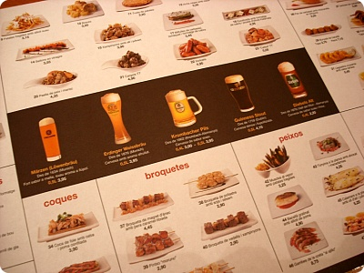
요건 점심해결하러 아무곳이나 들어갔는데
잘못선택했음....OTL
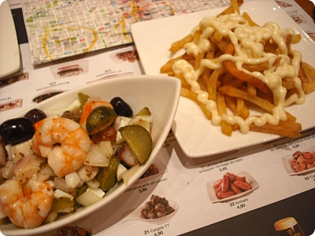
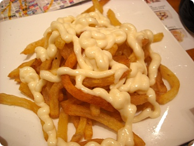
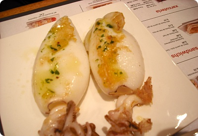
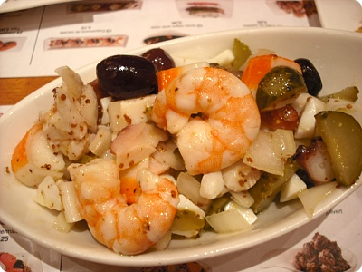
맛은 괜찮았는데 접시마다 양이 너무 작았다;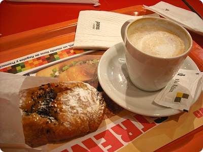
요것도 유명한 체인이라는빵스&컴퍼니
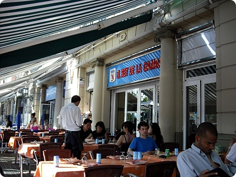
엘 레이 데 라 감바 - 새우의 왕이라는 뜻이라네용
느즈막하게 해변가 가서 모래사장좀 걷고 물장구좀 치다가
저녁먹으로 거거
(후에 들은 이야기인데 오후1~2시쯤 해변가를 가면
토플리스 언니들이 그렇게 많다던데 ㅜㅜ
크흡 진작 알았음 그때가는건데OTL)
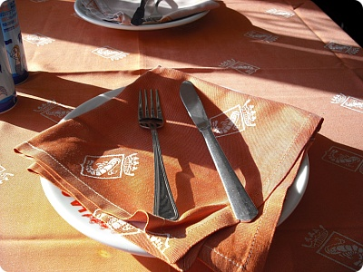
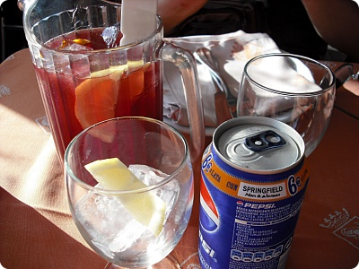
동생은 상그릴라 나능 콜라나중에 동생곰이 요리랑 같이 마시믄서
이 술이 해산물이랑 정말 잘 어울린다고 좋아했음
아빠님 선물한다고 면세점에서 한병 사 갔다
부...부럽다 ㅜㅜ 술이 맛나냐? 흑흑
난 알콜맛 밖에 모르겠던데 ㅜㅜ
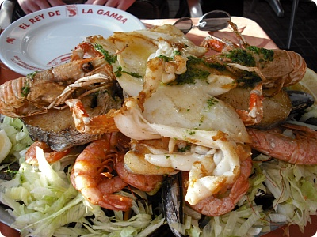
드디어 등장!!! 이집 대표메뉴(??)밑에는 홍합 / 새우 / 생선구이 에 오징어까지
해산물이 잔뜩!! >_<
아 진짜 스페인에서 그동안 못먹은 해산물 실컷 먹고왔어요//
(영국은 당췌 생선요리가 변변치 않아서 ㅜㅜ)
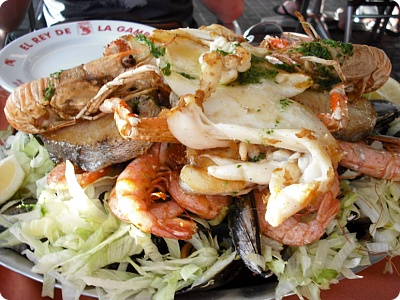
사진 한장더^^처음 나왔을때는 헉;; 뭔 양이 이리많아
이걸 둘이 어떻게 다 먹어;; - 였는데
밑에깔린 홍합빼고는 깔끔하게 먹어치웠습니다^^
어느것 하나 빠지지 않고 다 맛있어요 ㅜㅜ
먼저 스페인 댕겨온 쎄진양이 스페인 먹을게 다 맛나서
거진 먹는데 돈 다쓰고왔다더니 그말이 사실이었어 ㅜㅜ
으으 ㅜㅜ 또 생각난다
대따 맛난 오징어랑 튼실(?)했던 생선구이ㅜㅜ
새우도 맛나고 홍합도 비린내가 하나도 없었어요//
사실 홍합 별로 안 좋아하는데 이건 왤케 맛있어 ㅜㅜ
사진보니까 또 가고싶......
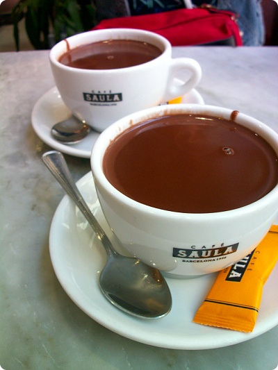
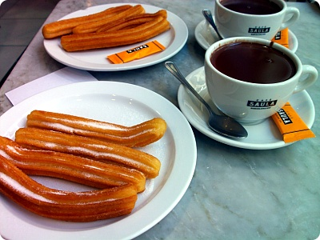
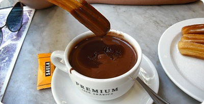
스페인에 왔음 츄러스를 먹어야 한다
꾸닥꾸닥한 초코에 찍어먹기 >_<
숙소에서 만난 분한테 들은이야기 인데
얘네는 이게 해장하는 거라고?? 진짜인가??@_@
꾸닥꾸닥한 초코에 찍어먹기 >_<
숙소에서 만난 분한테 들은이야기 인데
얘네는 이게 해장하는 거라고?? 진짜인가??@_@
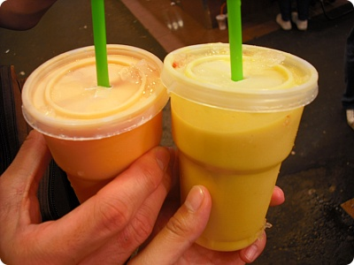
공항가기전에 아쉬워서 한번더 사먹은 과일쥬스 ㅜㅜ
가격도 왕 착하심 1유로!!
다른메뉴를 도전해볼까 하다가 또 같은걸루 ^^ 망고+코코넛
요것말고도 밥먹구 아슈크림도 꼬박꼬박 사먹고
2박3일동안 돌아댕기면서
신나게 먹부림~^^;;;
이걸로 여름 여행 끗~입니다;;
이제 정신차려야지^^;;;;;;
가격도 왕 착하심 1유로!!
다른메뉴를 도전해볼까 하다가 또 같은걸루 ^^ 망고+코코넛
요것말고도 밥먹구 아슈크림도 꼬박꼬박 사먹고
2박3일동안 돌아댕기면서
신나게 먹부림~^^;;;
이걸로 여름 여행 끗~입니다;;
이제 정신차려야지^^;;;;;;